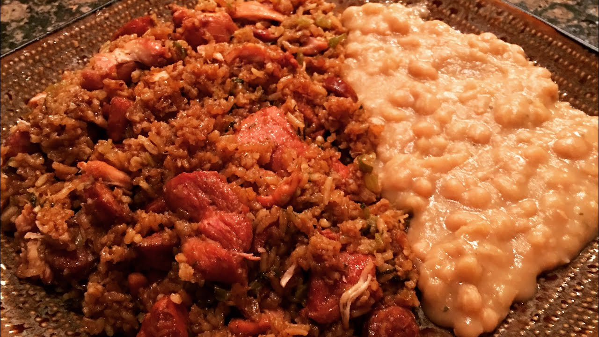

Jambalaya
Staying true to our Cajun roots, Jambalya is another Louisiana staple that can probably be found at most restaurants here in the Bayou.
This simple meal will turn heads at any function you choose to bring it to, and will defintely make people more curious about Cajun food
Ingredients:
- 2 Onion
- 1 Bell Pepper
- 1 Bunch Green Onion
- 2 Sticks of Celery
- 4 Cloves of Garlic
- 1 lb Pork Roast
- Kosher Salt and Pepper (to season pork)
- 1 Tablespoon Vegetable Oil
- 1 lb Boneless Chicken Thighs
- 1 lb Smoked Sausage
- 3 Beef Bouillon Cubes
- 1/2 Tablespoon of Cajun or Creole Seasoning
- 1 Teaspoon of Salt
- 3 & 1/2 Cups Water
- 1 Tablespoon of Hot Sauce
- 1 Tablespoon of Browning Sauce
- 2 Cups Rice
- Developers Note: We substitute the pork for an extra pound of either chicken or sausage, as some in my household do not like the pork and it still tastes fantastic
Steps:
- First, start out by heating a large pot over Medium Heat.
- Chop the Onions, Bell Pepper, Green Onions, Celery and Garlic. Put in a container and move to the fridge.
- Prep the pork and chicken by cutting into cube like pieces.
- Slice the sausage.
- Season the pork well with kosher salt and pepper.
- Add the vegetable oil to the pot and sear the pork for 20 minutes.
- After 20 minutes of cooking the pork, add the Chicken to the Pork and cook for another 10 minutes, stirring occasionally.
- Remove the Chicken and Pork, then brown the Sausage for another 10-15 minuets.
- At this point preheat your oven to 300°
- After 10-15 minutes, Remove the Sausage so that there's nothing left but the drippings.
- Add the Onion, Bell Pepper, Green Onion, Celery, Garlic, and sauté for roughly 40 minutes.
- After 40 minutes, Add the beef bouillon cubes, cajun seasoning, and salt.
- Sauté for another 10 minutes.
- Add the Water, Meats, Rice, Hot Sauce, Browning Sauce, and stir.
- Bring the mix to a boil, once boiling, cover, turn the fire off, and put the pot in the oven.
- Cook for exactly 1 hour.
- Once done, remove the jambalaya, and set aside for 5 minutes. DO NOT UNCOVER UNTIL TIME IS UP!
- When the time is up, remove the cover, mix everything well, and serve.